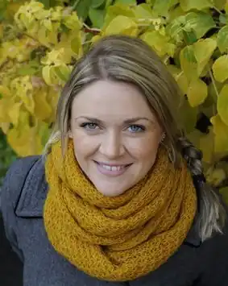

Народилася 1979 року. Виростала в місті Тронгейм (Норвегія). Там само вивчала графічний дизайн. 2001 року переїхала до Саутгемптона у Великій Британії, де отримала ступінь бакалавра в галузі ілюстрування. У 2007 році повернулася до Осло, вивчала дитячу й підліткову літературу в Норвезькому Інституті Дитячої Книги (Norsk barnebokinstitutt, NBI). Згодом працювала в книжковому магазині й у видавництві.
2006 року дебютувала як письменниця та ілюстраторка, опублікувавши у видавництві Omnipax книжку "Маленький герой".
Найбільше відома як авторка книжок-щоденників Уди Стоккгейм. Книги: 2006 — "Маленький герой" (Den lille helten); 2008 — "Маленький герой і кіт-викрадач" (Den lille helten og kattekidnapperen); 2010 — "Привіт, це я!" (Hei, det er meg!), повість (перекладена шведською, українською, російською, голландською і німецькою мовами); 2012 — "Абсолютно нецілована" (Absolutt ukyssa), повість; 2014 — "Суперліто" (Supersommer… eller?) 2015 — Happy End, попри все?.. (Happy ending, liksom?)